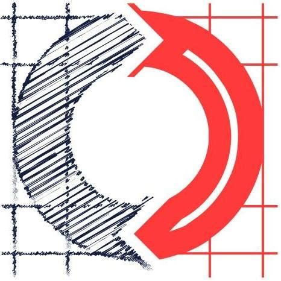

About Me
About Me
As a passionate and dedicated Full Stack Developer at Sketch Development Services, I specialize in creating innovative software solutions. Currently, I am contributing to development in Time Front, a key project utilizing technologies such as MongoDB, Vue, TypeScript, Playwright, and JavaScript. My role in this Agile environment involves not only coding but also contributing to the continuous improvement of our software, ensuring both efficiency and user satisfaction.
At Murray State University, where I earned a bachelor's degree in Music Education with a minor in Computer Science, I laid the foundation of my technical expertise. Beyond practical programming in Java, JavaScript, and C++, my studies delved into essential computer science concepts such as Object-Oriented Programming, Algorithms, and Data Structures. This rigorous academic training honed my analytical skills and provided a strong theoretical understanding that underpins my practical work.
I am committed to continuous learning and currently enhancing my skill set through the Savvy Coders' Full Stack Web Development course. Here, I am gaining hands-on experience in building advanced web applications using Node.js and JavaScript, further broadening my expertise in the field.
I am keen on exploring new opportunities in technology that challenge me and allow me to contribute to innovative solutions. Let’s connect to discuss how we can collaborate to drive technological advancement and innovation!
Skills
Programming Languages
- Java
- C++
- TypeScript
- Vue
- Node.js
- JavaScript
- CSS
- HTML5
Databases
- MongoDB
Source and Version Control
- Git
- GitHub
IDE
- Visual Studio Code
- JetBrains
Project Management
- Agile
- Jira
Testing
- Playwright
Projects
Perpetua

Perpetua is a dynamic web application designed to provide users with a platform to create, monitor, and maintain their daily habits. This interactive, user-friendly interface is the result of a capstone project integrating HTML, CSS, and JavaScript.
Key features include habit creation, an interactive dashboard, habit tracking, a responsive design, progress analytics, custom reminders, and a user-friendly interface. Data persistence is achieved through JavaScript's local storage, ensuring tracking continues seamlessly.
This project serves as a testament to the power of web development technologies in creating practical, user-centric applications. It demonstrates proficiency in front-end development, emphasizing design thinking and user experience.
Experience
Sketch Development
Contributed to the development of Time Front, a software utilizing Vue, TypeScript, Playwright, and MongoDB. Time Front is designed to optimize consulting firms by organizing complex client engagements, creating and delivering invoices, tracking employee hours, and providing tenants with unprecedented insights and intelligence about their businesses.
Participated in "Sketch Days," where developers form teams to create technical projects over a week, enhancing learning and team-building. Projects included developing Agile Freedom, a game application using Rust, Vue, and TypeScript, teaching users agile principles. Another notable project involved integrating QuickBooks with Sketch Developments' invoicing software, Clifrd, using Intuit Developer and JavaScript.
Collaborated with team members in designing APIs, enhancing system interoperability and functionality.
Developed features for both mobile and desktop platforms in an Agile environment, enabling rapid iteration to meet client needs. This role involved conducting code reviews, debugging, and resolving issues, thereby contributing significantly to project success and client satisfaction.